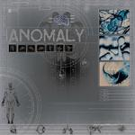

Home Artist links Label link

| Artist: | Anomaly |
| Title: | Anomaly |
| Label: | Bee & Bee Records |
| Length(s): | 42 minutes |
| Year(s) of release: | 2000 |
| Month of review: | 05/2000 |
Line up
John Aponnen - bass
Ivar Pijper - keyboards
Rory Hansen - guitars
John-Paul Munoz - drums
Tracks
| 1) | B-yond 2K | 5.34
|
| 2) | >4hth&x | 4.06
|
| 3) | 101101001 | 4.57
|
| 4) | Xtreme | 4.54
|
| 5) | Mt Chamber | 4.39
|
| 6) | Xs D-nied | 5.06
|
| 7) | Vir2al | 8.36
|
| 8) | None Of The Above | 4.47
|
Summary
A demo disc that is supposed to become the first official release of the
band, which hails from The Hague in the Netherlands.
The music
B-yond 2K opens this instrumental album with weird sounds and noises. Then the
guitar, the main instrument on this album, sets in accompanied by busy
drumming (fast ruffles, double bass drums etc.) and some melodic support
from the keyboards. These however have only a supporting role. The music
is definitely progmetal, of the somewhat bombastic kind at first, but soon
the music breaks into a more introspective passage. The rhythm guitar then sets
in, later gives way to a guitar solo that is more of an emotional nature.
Well-structured and composed the instrumental is brought to its end.
The music is quite complex by the way with plenty of breaks and diversions, but
the composition shines through nonetheless.
The cryptic >4hth&x (larger than forage, thanks?) opens in a fusionist way
and notwithstanding a few metallic outbursts it continues to be a somewhat
jazzrockish piece and not as enticing as the previous.
The bitstring 101101001 is the title of the next track and the number is one
that I can do quite little with. Doesn't strike a chord. The band does however
with the opening clavecimbel like passage and the peaceful continuation. The
guitar work is similar to that of the first track. The song has some pretty
intense and bombastic moments. Xtreme is the equivalent of a ballad with
some feeling guitarwork and some nice accompaniment on the piano.
The next part signifies a return to the rock, but not so fast. The keyboards
seem to play an ever more prominent as we progress in this album,
and I have to say the album fares well with it. The music continues to be
complex and full of variation and breaks, but because of the good melodies
that are used throughout, the music continues to
Moody bass playing opens Mt Chamber. Here again a jazzrock/fusion influence
is felt. I'm very much reminded here of the Stuart Hamms Flow My Tears, also
an instrumental ballad, one of the few succesful ones in fact. This seems to
be the track on which Aponnen can show himself, because the bass stays
pronounced throughout. A relaxed atmosphere in this track that is only
broken by some samples of people talking. The hammered part that sometimes
pops up is quite strange. Xs d-nied is back to the complex rock patterns
with shifting signatures and Crimsonesque guitar excursions. When the keyboards
are left out of the game, the music can easily become a bit sterile. This gets
better towards the end of the track. Vir2al is an off-beat plodding piece with
flute like keyboards and bubble organ playing. A bit of a disjointed piece
that tends to get more form along the way. Final track None Of The Above
is somewhat filmic in its approach, but also contains some highspirited
guitar and keyboards work. I really like the watery/dripping keyboards
here.
Conclusion
This band hardly owes anything to anyone. The music can be compared with
bands such as Gordian Knot and maybe even Dixie Dregs, but in my opinion
certainly not with a band such as Dream Theater, or any of the currently
succesful progmetal bands. The keyboards are very much integrated in the music,
which is quite complex (and not without reason) and ranges from playful to
moody and filmic to hard-edged. With this band I'm thinking of a fusion band
going metallic than the other way around. Good instrumental music played by
proficient musicians.
© Jurriaan Hage